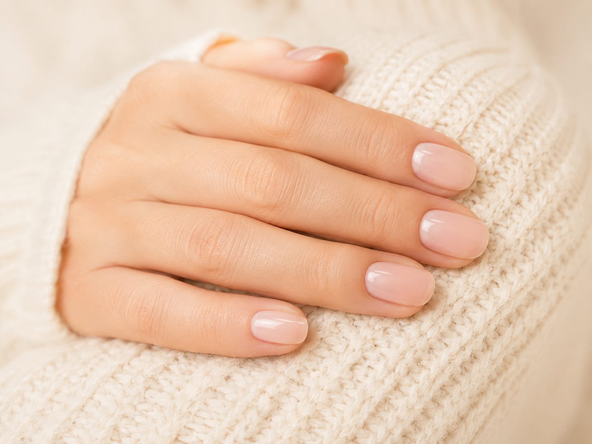
Care Services
상태에 맞춰 살펴보는 케어 서비스
기본 정리부터 손·발톱 컨디션을 고려한 관리까지 상담 후 알맞은 서비스를 안내합니다.
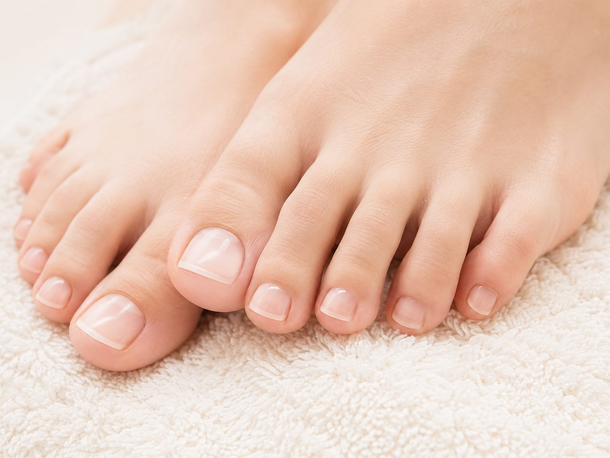
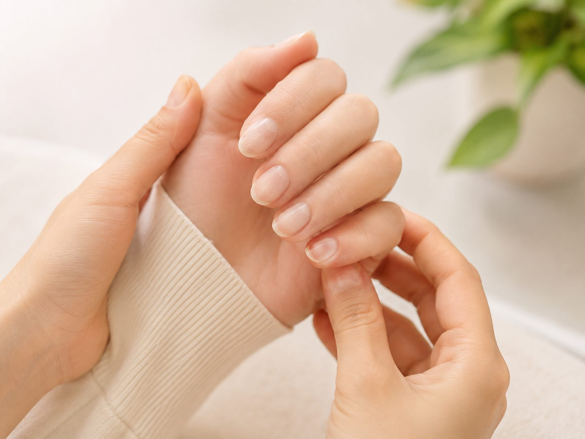
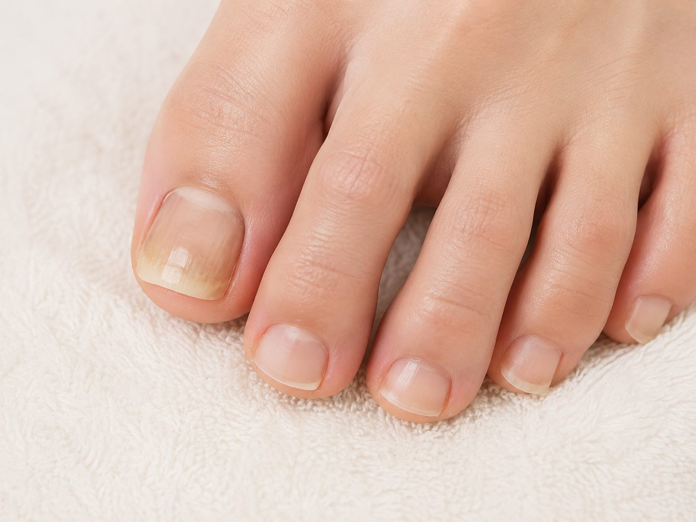
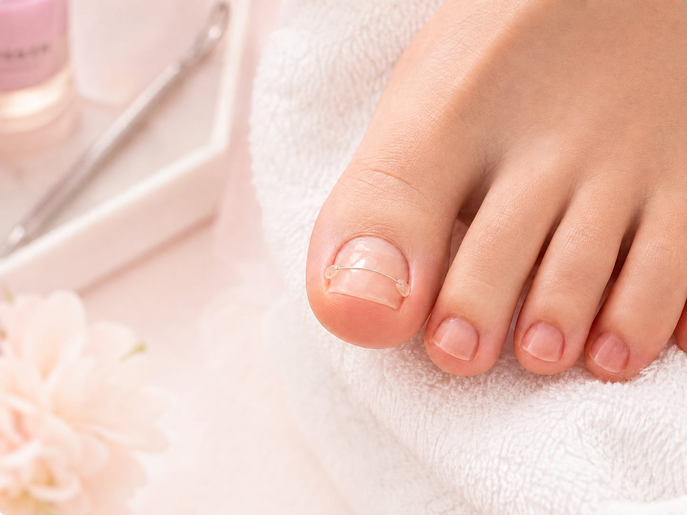
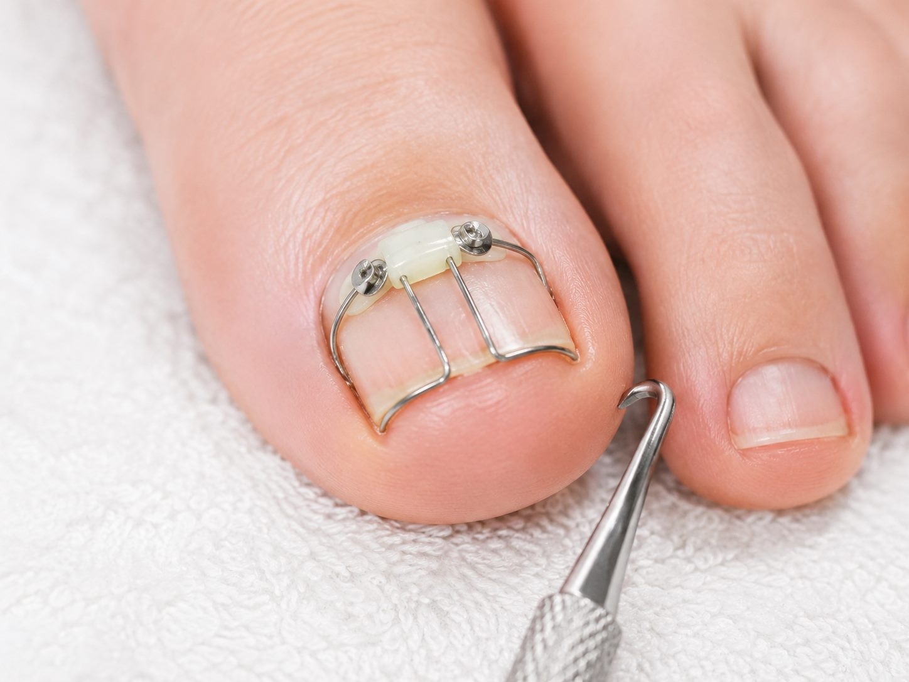
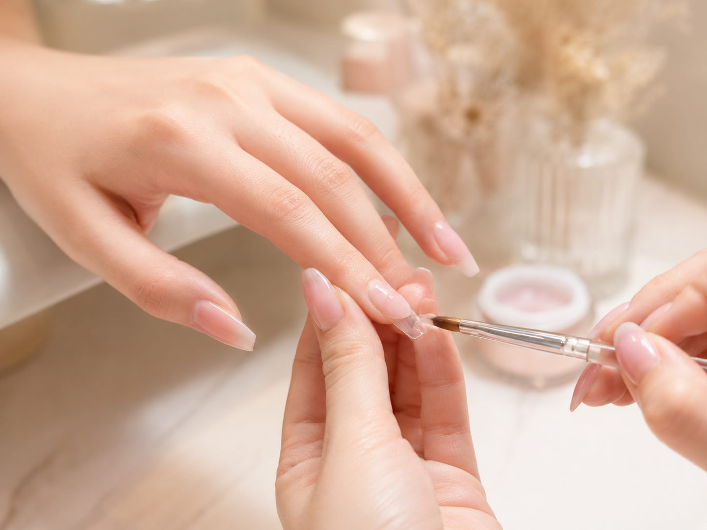
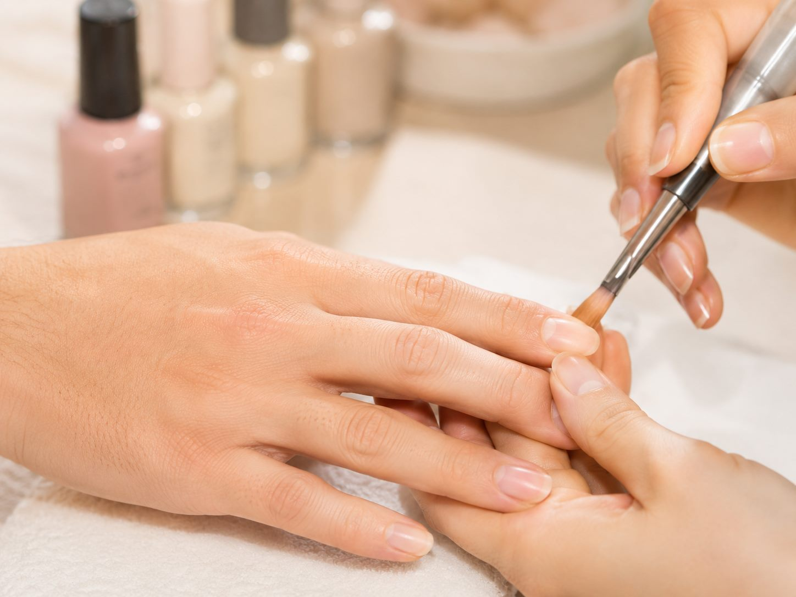
Recommended For
이런 분께 추천합니다
손톱이 쉽게 갈라지거나 깨지는 분
손톱 주변 정리가 필요한 분
발톱이 두껍거나 변색된 분
내성 발톱으로 불편함이 있는 분
손·발톱 상태에 맞는 관리가 필요한 분
Care Process
관리 진행 과정
현재 상태를 충분히 확인한 후 필요한 관리와 홈케어 방법을 차분하게 안내합니다.
-
01
상태 확인
손·발톱과 주변 컨디션, 불편한 부분을 살펴봅니다.
-
02
맞춤 상담
생활 습관과 원하는 관리 방향을 함께 확인합니다.
-
03
손·발톱 관리
상담 내용을 바탕으로 네일 케어 범위의 관리를 진행합니다.
-
04
홈케어 안내
일상에서 편안하게 관리할 수 있는 방법을 안내합니다.
Care Cases
케어 사례
관리 전후 이미지는 실제 사례가 준비되는 대로 같은 구조에 추가할 수 있습니다.
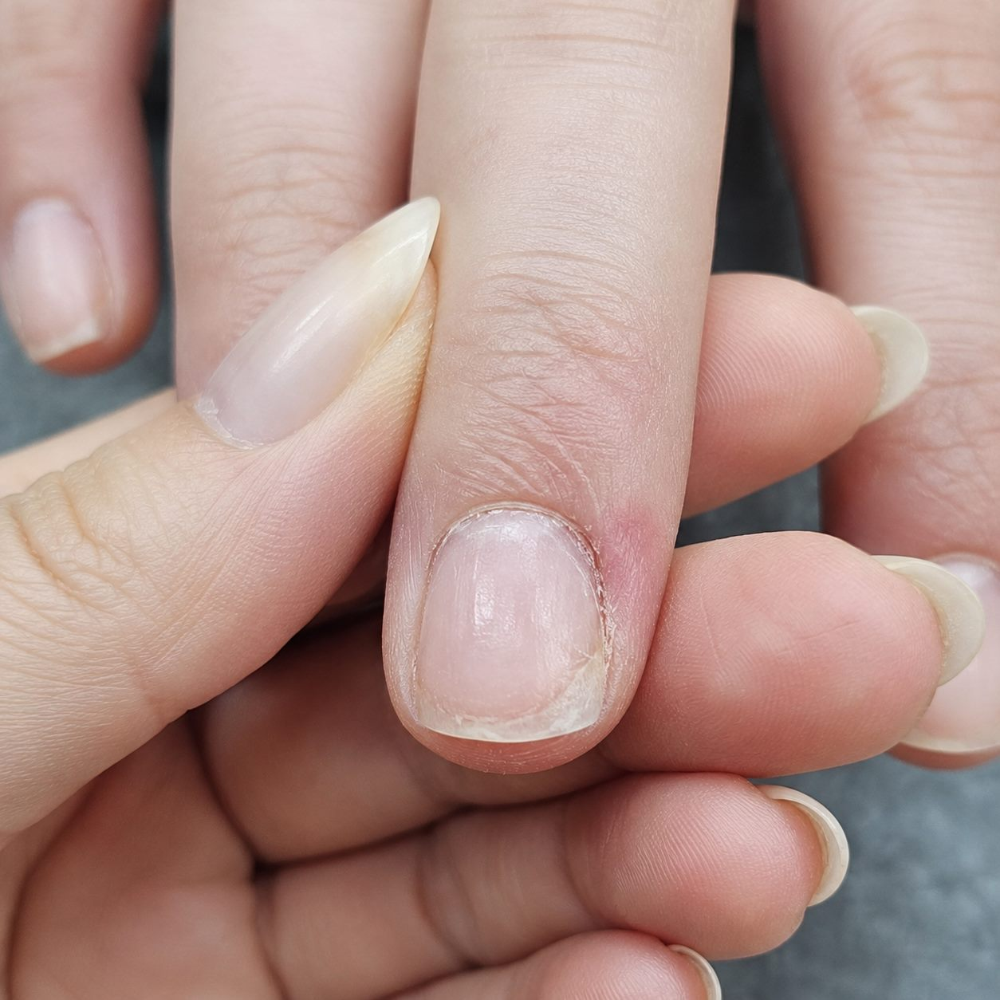
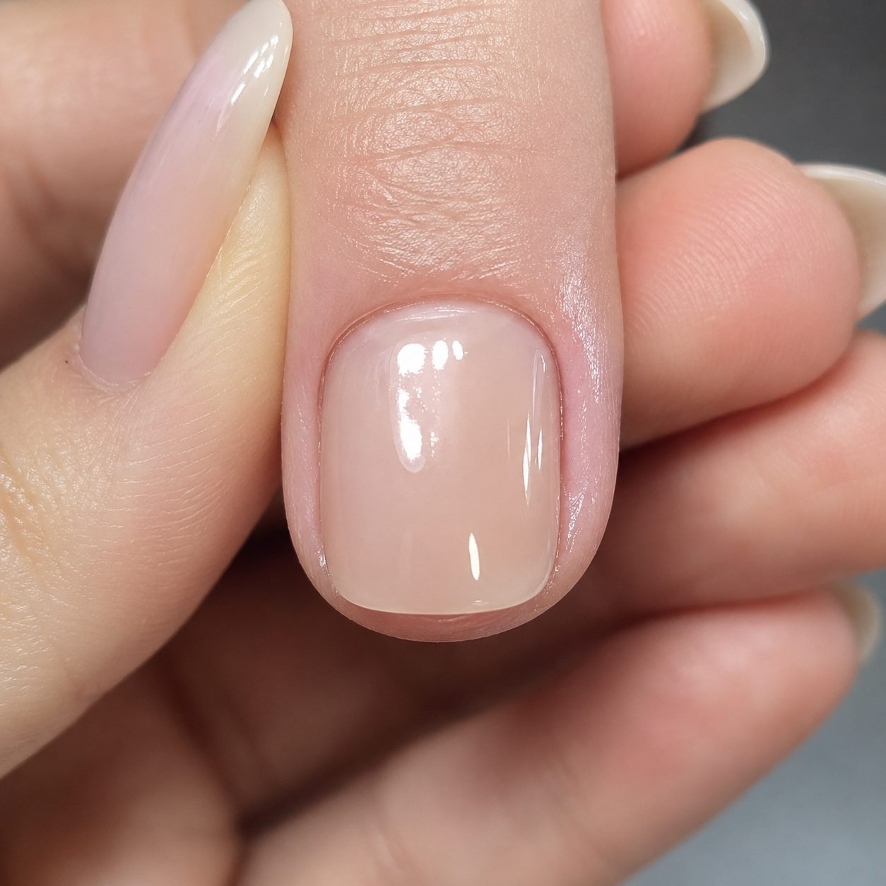
기본 케어 사례
손톱 주변 정리와 보습 관리
건조하고 거칠어진 손톱 주변을 정리한 뒤, 보습 케어를 더해 한층 깔끔하고 건강해 보이도록 관리한 사례
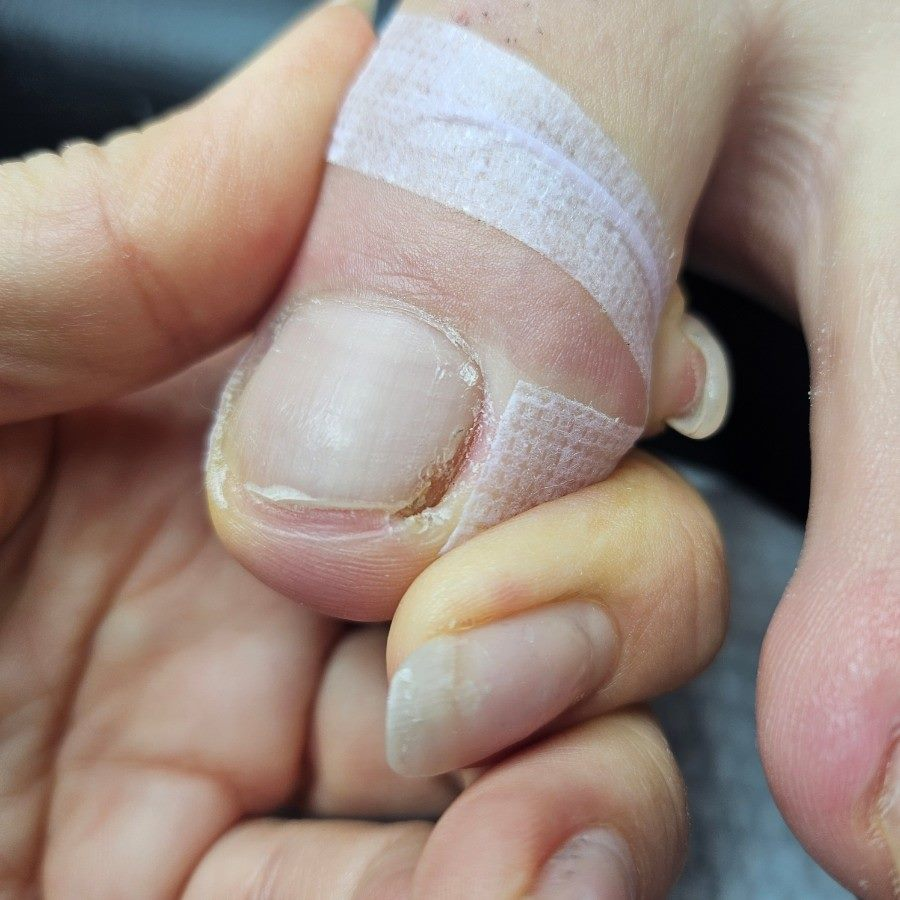
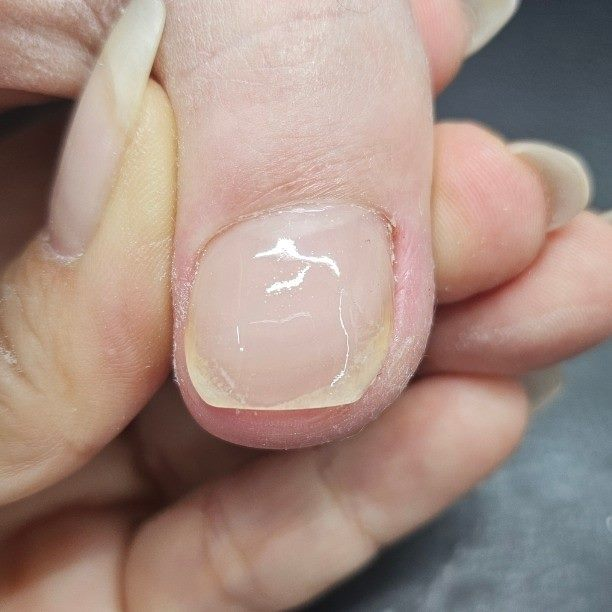
발톱 관리 사례
발톱 상태 확인과 기본 정리
발톱의 모양과 주변 컨디션을 꼼꼼히 확인한 후, 기본 정리와 클린 케어를 통해 한층 단정하고 편안한 상태로 관리한 사례
Booking / Contact
상태가 궁금하다면 사진 상담 또는 방문 상담을 이용해보세요.
네이버 예약과 카카오톡의 실제 운영 링크는 확인 후 연결됩니다.